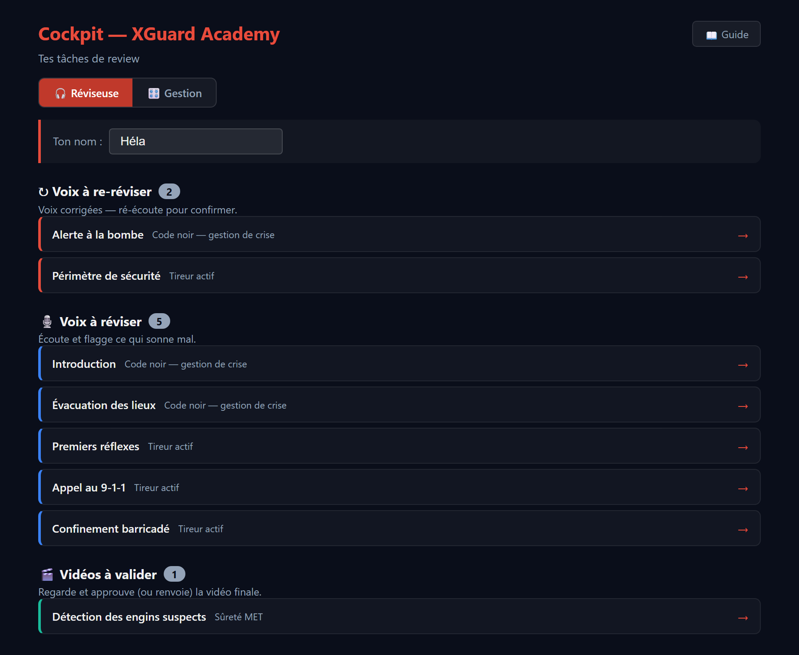
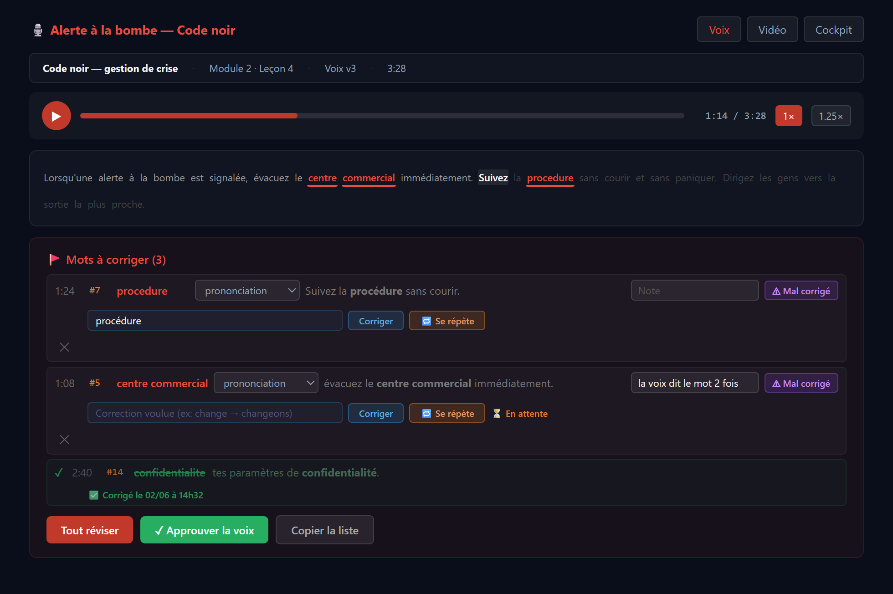
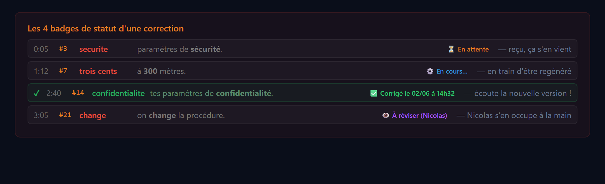
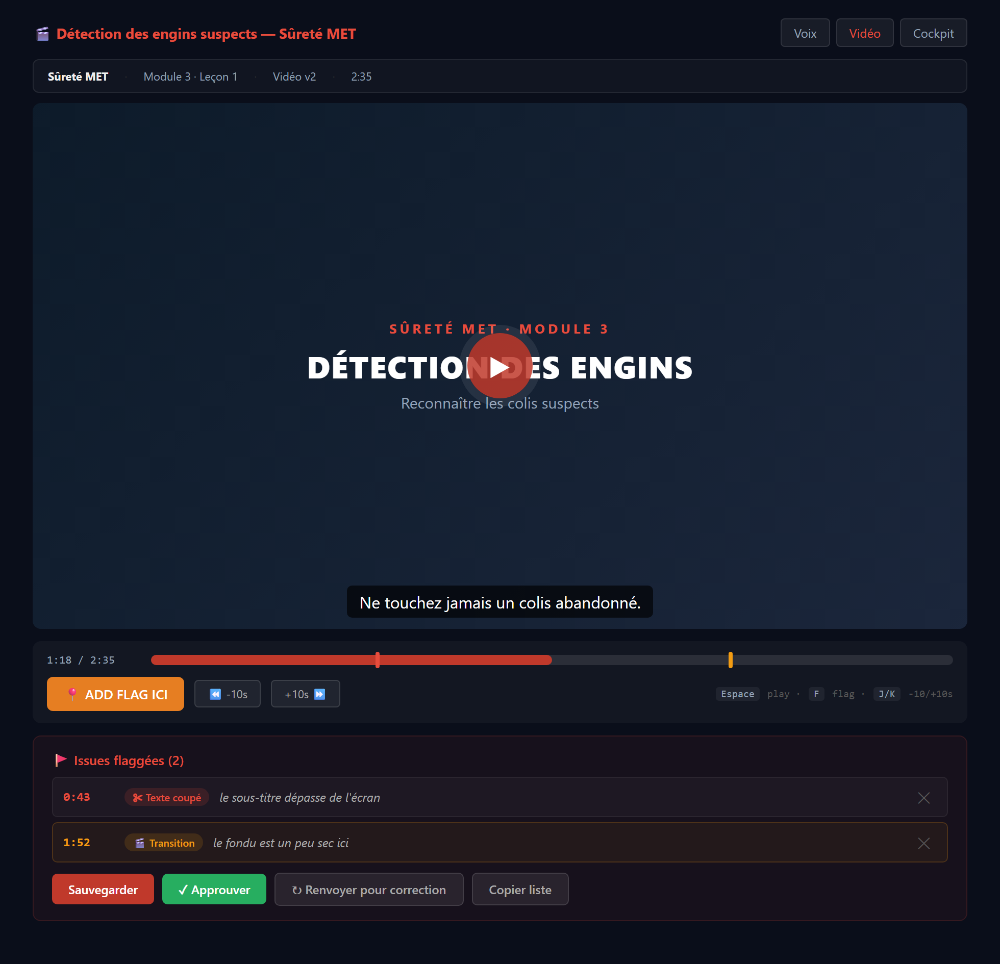
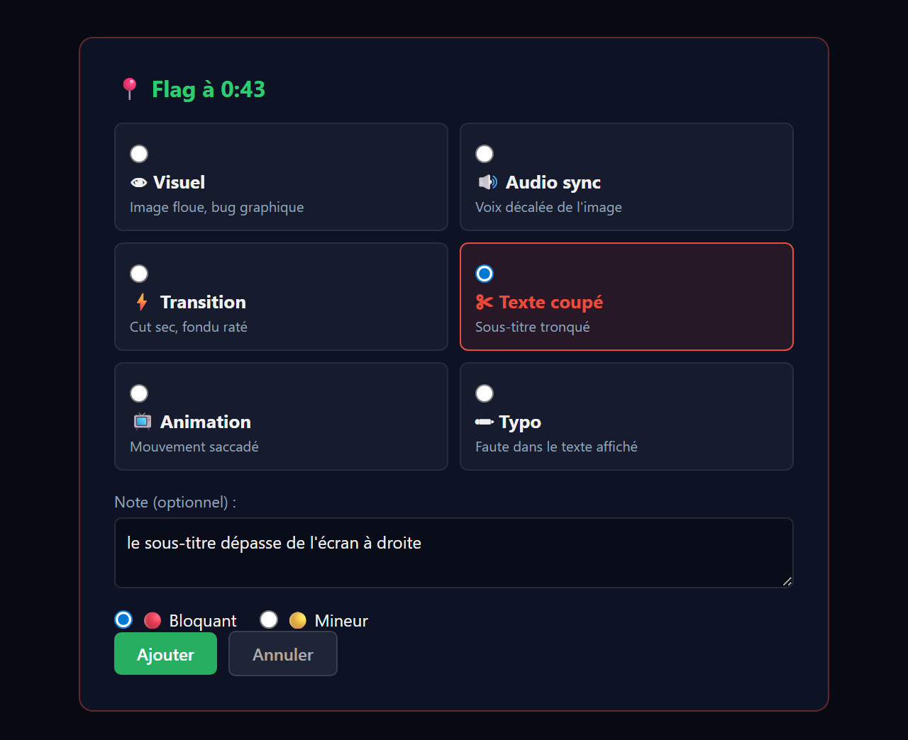

Guide complet pour Hela — tout ce que tu peux faire dans l'app, étape par étape.
Ce guide te montre chaque écran et chaque bouton de l'app, avec des captures.
Le but : que tu puisses tout faire toi-même — écouter une voix, corriger un mot, valider une vidéo —
sans avoir à écrire à Nicolas pour chaque détail. Garde-le à côté de toi les premières fois.
On produit des formations en sécurité. Avant qu'une formation sorte, tu vérifies deux choses :
La voix (le narrateur) : est-ce que tous les mots sont bien prononcés ?
La vidéo finale : est-ce que l'image, le texte à l'écran et le son sont corrects ?
Quand un mot sonne mal, tu ne fais plus juste « le signaler » : tu peux demander la correction
directement dans l'app. Le système la refait tout seul (en quelques minutes) et te montre un petit
badge quand c'est prêt. Pour les vrais changements de texte, c'est Nicolas qui tranche — mais tu n'as
rien de plus à faire, c'est noté automatiquement.
En une phrase : tu écoutes, tu cliques sur ce qui cloche, tu écris la bonne version,
et la machine se charge du reste. Tu fais presque tout de bout en bout.
B. À quel rythme l'utiliser
Tu n'as pas besoin d'attendre quoi que ce soit. Voici la routine simple :
1
Ouvre le cockpit (la page d'accueil) quand tu commences. Il te montre ce qui t'attend, classé par priorité.
2
Travaille de haut en bas : d'abord les voix à re-réviser, puis les voix à réviser, puis les vidéos à valider.
Clique une leçon, fais-la au complet, reviens au cockpit, passe à la suivante.
3
Pas besoin de rester devant l'écran après une demande de correction. Les badges se mettent à jour seuls
(environ aux 20 secondes) et restent à jour quand tu reviens plus tard.
Combien de temps ? Une leçon dure en moyenne 2 à 5 minutes d'audio. Compte environ
5 à 10 minutes pour la réviser : l'écouter en entier, flagger ce qui cloche, demander les corrections.
Une correction est habituellement prête en quelques minutes (max ~5).
1. Ton cockpit (page d'accueil)
C'est ton point de départ. Mets ton nom (Héla) une fois — il est retenu. Le bouton
🎧 Réviseuse doit être allumé (en rouge) : c'est ta vue. Elle te montre seulement ton
travail, rangé en trois files.

Ton cockpit en vue Réviseuse — trois files de tâches, classées par priorité.
Les trois files, de haut en bas :
↻ Voix à re-réviser — des voix qui ont été corrigées : ré-écoute-les juste pour confirmer que c'est bon maintenant.
🎙️ Voix à réviser — des nouvelles voix à écouter et à flagger pour la première fois.
🎬 Vidéos à valider — les vidéos finales à regarder et approuver (ou renvoyer).
Le chiffre dans la pastille = combien il en reste dans la file. Clique une ligne pour ouvrir la leçon.
Quand une file est vide, il n'y a rien à faire de ce côté. Quand tout est vide : 🎉 rien à réviser.
Le bouton 🎛️ Gestion à côté, c'est la vue de Nicolas (vue d'ensemble de la production). Tu peux
l'ignorer — reste sur 🎧 Réviseuse.
2. Réviser une voix
Quand tu cliques une leçon dans « Voix à réviser », tu arrives ici :

L'écran de révision d'une voix : le lecteur en haut, le texte au milieu, la liste des mots à corriger en bas.
Écouter
Clique ▶ pour jouer. Le texte défile et le mot lu est surligné. Tu peux changer la vitesse
(1×, 1.25×) et cliquer dans la barre pour te déplacer. Clique sur n'importe quel
mot du texte pour sauter à ce moment-là dans l'audio.
Flagger un mot qui sonne mal
Quand un mot est mal prononcé, clique dessus dans le texte. Il devient rouge et souligné, et
apparaît dans la liste « Mots à corriger » en bas. (Astuce : Ctrl+clic sur plusieurs
mots d'affilée pour les grouper en un seul flag, ex. « centre commercial ».)
Demander la correction — le bouton Corriger
Dans la ligne du flag, repère le champ bleu « Correction voulue ». Tape la bonne version du mot,
puis clique Corriger. C'est tout : la demande part, et un badge apparaît pour te
dire où c'est rendu. Le système refait l'audio tout seul.
Comment bien écrire la correction (écris simplement le mot comme tu veux l'entendre) :
Tu veux…
Écris dans le champ…
Corriger un accent mal prononcé
sécurité (ou securite → sécurité)
✔ auto
Un nombre dit en chiffres
trois cents mètres
✔ auto
Un sigle mal épelé
C N E S S T
✔ auto
Changer un mot du texte
change → changeons
✔ auto
Juste « refais-le »
laisse une note, ou écris refaire
✔ auto
Astuce : dans le doute, écris ce que tu voudrais entendre, à voix haute, en bon français.
Le système choisit la façon la plus sûre. S'il n'est pas certain, il passe la demande à Nicolas — tu n'as rien à faire.
Quand la voix répète ou bégaie — le bouton 🔁 Se répète
Parfois le texte est bon, mais la voix répète un mot ou bégaie (ex. « centre commercial… centre
commercial »). Dans ce cas, ne touche pas au texte : clique simplement 🔁 Se répète
sur le flag. Le système refait juste ce bout de phrase, sans rien changer aux mots. Tu n'as pas besoin de taper quoi que ce soit.
Si une correction n'est toujours pas bonne — le bouton ⚠ Mal corrigé
Une correction a été faite, tu ré-écoutes, et c'est encore pas correct ? Clique
⚠ Mal corrigé sur ce flag. Il repasse en violet et remonte en priorité pour être refait.
C'est ta façon de dire « non, ça, recommence ».
La catégorie prononciation ▾
À côté du mot, un petit menu permet de préciser le type de problème. La plupart du temps, laisse
prononciation (la voix dit mal un mot bien écrit). Les deux autres choix servent surtout à Nicolas :
prononciation — le mot est bien écrit mais mal dit (le cas le plus fréquent).
faute de frappe — le mot est carrément mal écrit dans le texte.
phrase à réécrire — toute la phrase est mal tournée.
La note (optionnel)
Le champ « Note » sert à laisser un commentaire libre (ex. « la voix dit le mot 2 fois »). Ce n'est
pas obligatoire — utilise-le si ça aide à expliquer.
Approuver la voix — le bouton ✓ Approuver la voix
Quand tu as écouté toute la leçon et que la voix est bonne (ou que toutes tes corrections sont faites), clique
✓ Approuver la voix. La leçon quitte ta file et avance vers la production de la vidéo.
C'est ton feu vert.
3. Les badges de statut
Après un Corriger ou un 🔁 Se répète, un badge
apparaît à droite du flag et se met à jour tout seul. Voici les quatre que tu verras :

Les quatre statuts d'une correction, du moment où tu l'envoies jusqu'à ce qu'elle soit prête.
⏳ En attente — ta demande est reçue, elle s'en vient.
⚙️ En cours… — la voix est en train d'être regénérée.
✅ Corrigé (avec la date) — c'est fait ! Ré-écoute la nouvelle version.
👁️ À réviser (Nicolas) — un cas qui change le texte : Nicolas le fait à la main. Rien à faire de plus.
Tu peux fermer l'app et revenir plus tard : le badge sera à jour. Si jamais tu vois
⚠ Erreur, re-clique simplement Corriger ;
si ça revient, écris à Nicolas.
Quand ça part « À réviser », c'est normal. Pour les vrais changements de mots ou les cas
qui dépendent du sens, le système préfère laisser Nicolas décider plutôt que de risquer une erreur dans le script.
C'est noté, il le voit. Continue avec les autres flags.
4. Valider une vidéo
Quand la voix d'une leçon est approuvée, Nicolas produit la vidéo finale. Elle t'arrive dans la file
🎬 Vidéos à valider. Clique-la pour l'ouvrir :

L'écran de validation d'une vidéo : le lecteur, la barre de temps avec tes repères, et la liste des problèmes.
Regarder et marquer un problème — le bouton 📍 ADD FLAG ICI
Regarde la vidéo. Si un moment cloche (texte coupé, image, son décalé, faute à l'écran, transition ratée…),
clique 📍 ADD FLAG ICIau bon moment. Une petite fenêtre s'ouvre
pour préciser le type de problème :

Choisis la catégorie, ajoute une note, indique si c'est bloquant ou mineur, puis « Ajouter ».
Chaque flag apparaît ensuite sous la vidéo avec son temps (ex. 0:43) et sa catégorie. Tu peux en
mettre plusieurs. Un repère apparaît aussi sur la barre de temps pour retrouver le moment facilement.
Décider — ✓ Approuver ou ↻ Renvoyer pour correction
Si tout est bon → ✓ Approuver. La leçon est prête pour le déploiement.
Si quelque chose ne va pas → ↻ Renvoyer pour correction. Tes moments
flaggés + ta raison partent à Nicolas ; il refait la vidéo, et elle te revient dans
Vidéos à valider pour que tu vérifies la nouvelle version.
Petit truc : avant de renvoyer, ajoute au moins un flag au moment du problème. Ça dit
exactement à Nicolas où regarder, pas juste quoi.
5. Bonnes pratiques
Une correction = un mot ou un bout de phrase. Si deux mots sonnent mal, fais deux corrections.
Écoute la leçon au complet avant d'approuver — même si tu n'as flaggé qu'un mot au début.
La voix répète un mot ? → 🔁 Se répète (pas besoin de réécrire le texte).
Une correction déjà faite est encore mauvaise ? → ⚠ Mal corrigé.
Pas besoin d'attendre devant l'écran : les badges se rafraîchissent seuls.
Pour une vidéo, mets un flag au moment du problème avant de la renvoyer.
6. Si ça bloque
Badge ⚠ Erreur → re-clique Corriger. Si ça revient, écris à Nicolas.
Un badge reste ⏳ En attente très longtemps (plus de ~15 min) → préviens Nicolas, le système est peut-être arrêté.
Tu ne retrouves pas une leçon → reviens au cockpit ; elle a peut-être changé de file (ex. voix approuvée → passée aux vidéos).
Un doute sur quoi écrire dans une correction → écris-le en bon français comme tu le dirais, et envoie. Le pire cas, ça part à Nicolas.